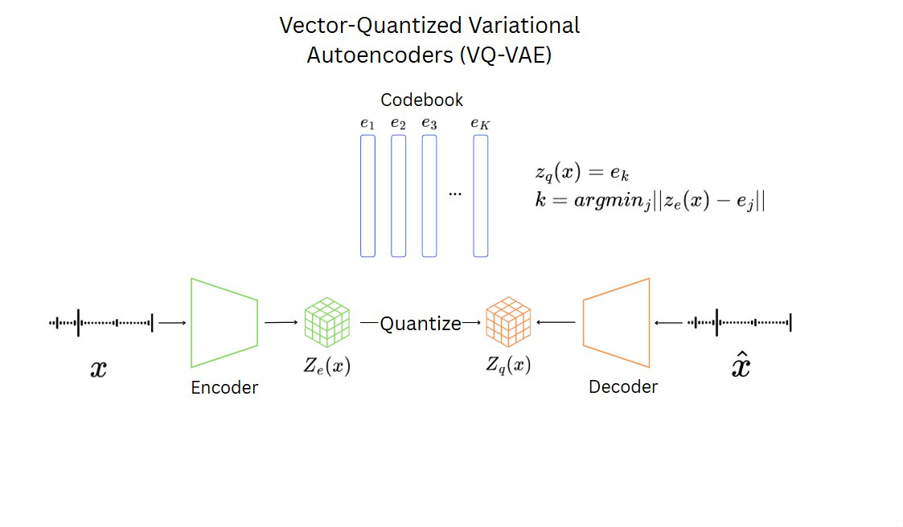
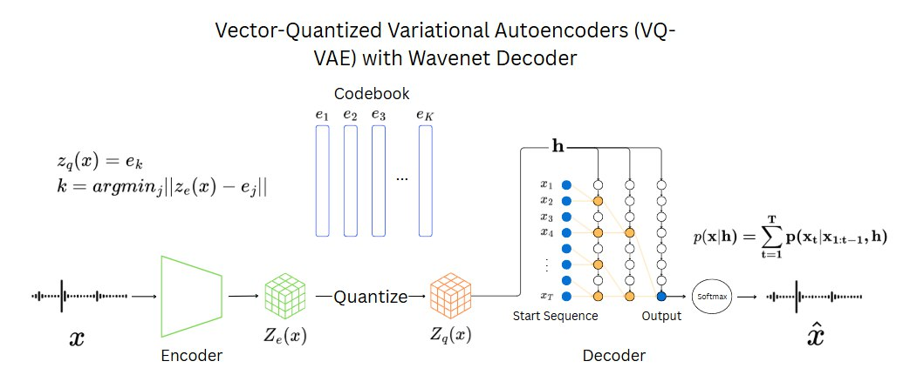

Introduction
In this project, we worked on adding audio to our multimodal model, nano4M. Our goal was to turn audio signals into a sequence of tokens, just like how we do with text and images. To do this, we built an audio tokenizer using a model called VQ-VAE. This model helps us take raw audio and convert it into a shorter, discrete representation that a neural network can understand.
We tested different versions of the tokenizer: one using spectrograms, one using raw waveforms, and one with a special decoder called WaveNet to improve the sound quality.
To train nano4M on audio together with images and text, we needed a dataset that aligned all three modalities. Since no public dataset included audio, images, and captions simultaneously, we created our own multimodal dataset. We started with AudioCaps (which provides audio and text), and then generated synthetic images from the captions using a text-to-image model.
Our final system can learn from audio, images, and text together, and can even guess missing pieces from one modality using the others. This opens up many possibilities, like generating sounds from text or understanding audio with the help of images and captions.
Audio Tokenizer
As part of our effort to integrate audio into nano4M, we developed a tokenizer based on a Vector Quantized Variational Autoencoder (VQ-VAE). The goal was to obtain discrete audio representations that can be used for multimodal learning alongside text and images.
Model Architecture Overview
We experimented with three different audio tokenization architectures: (1) VQ-VAE using mel spectrogram input and Griffin-Lim decoding, (2) VQ-VAE trained directly on raw waveform, and (3) VQ-VAE combined with a WaveNet decoder.
MelSpectrogram/Raw Waveform + L1/STFT Loss
Raw Waveform + WaveNet
1. From Spectrograms to Tokens
We began by training a VQ-VAE on LibriSpeech (100h), using mel spectrograms as input features. While reconstruction losses appeared low, the resulting waveforms reconstructed using Griffin-Lim were highly distorted.
Audio Sample: Original vs Griffin-Lim Reconstruction
Original
Reconstructed (Griffin-Lim)
2. Raw Waveform Modeling
We applied L1 loss between original and reconstructed waveforms. Despite improvements, the L1 loss failed to align with perceived audio quality. Adding a Short-Time Fourier Transform (STFT) loss helped, but did not fully resolve the issue.
Audio Sample: Original vs VQ-VAE on raw waveform
Original
Reconstructed (VQ-VAE raw waveform)
3. WaveNet as Decoder
To achieve higher-quality reconstructions, we replaced the VQ-VAE decoder with a WaveNet conditioned on the quantized latents \(z_q(x)\). This autoregressive decoder models the waveform as a product of conditional distributions:
$$ p(x|h) = \prod_{t=1}^{T} p(x_t | x_{1:t-1}, h),\text{ where } h = z_q(x) $$WaveNet predicts parameters of a mixture of logistic distributions per timestep:
$$ \begin{align} &p(x) =\sum_{i=1}^{K} \pi_i \cdot \text{Logistic}(x|\mu_i, \sigma_i) \\ &Loss_{t} = -\log(p(x_{t}))\\ &Loss_{total} = \sum_{t=1}^{T}Loss_{t} \end{align} $$4. Stabilizing Training
Initial training on the 100h subset was unstable. We added:
- Cosine Annealing with warm restarts
- Gradient Clipping
- 360h of audio
These changes partially stabilized learning. However, audio quality remained limited, likely due to insufficient latent expressiveness.
Audio Sample: Original vs reconstruction with Wavenet
Original
Reconstructed (VQ-VAE raw waveform)
7. Summary
Our experiments showed that high-quality waveform reconstruction from discrete tokens is challenging. L1 and STFT losses are insufficient alone; autoregressive models like WaveNet help, but depend heavily on latent quality and training stability.
Future work includes exploring HiFi-GAN or WaveRNN as decoders, and adding perceptual losses for better alignment with human judgments.
Dataset
A key challenge in our work was to find a suitable multimodal dataset containing aligned audio, images and text captions. Surprisingly, we did not find any publicly available dataset containing all three modalities. We ended up settling on AudioCaps dataset, containing, audio samples sourced from YouTube videos along with Human-writted captions describing the audio.
While AudioCaps provides audio-caption pairs, it lacks corresponding aligned images. We considered extracting frames from the source YouTube videos, but this would violate YouTube's Terms of Service and risk account termination. Instead, we generated synthetic images using a Dsitilled Stable Diffusion inference conditioned on the text captions.
Aligned audio, image and caption examples
Caption: "Rain falling and thunder roaring"
Caption: "Food frying with person narrating"
Caption: "Multiple adults speaking, and a child shouting in the background"
Dataset Creation Pipeline
- Downloading the audio from and caption from AudioCaps
- Generating images using Distilled Stable Diffusion
- Tokenizing the images using Cosmos-Tokenizer
- Tokenzing the audio using EnCodec
Limitations
While our approach provided a solution to the lack of available dataset, it has some limitations. Synthetic images does not perfectly match the audio content and are sometimes unrecognizable. Furthermore, AudioCaps dataset contains mostly environmental sounds which due to their uniqueness may be hard to learn and generate for a simple model.
Nano4M & Extras
Once the dataset was fully tokenized, we trained our model using the nano4M architecture, which is based on a 4M. During training, we intentionally hide a subset of the input tokens across modalities and ask the model to predict them using the available context.
The diagram below illustrates this process. On the left, each input modality—image, audio, and text—is tokenized separately. Then, a fixed number of tokens are randomly selected as inputs to the Transformer encoder, while the remaining ones are treated as targets to be predicted by the decoder. This masked pre-training encourages the model to reason across modalities.

This training strategy—visualized above—forces the model to reason across modalities to recover missing pieces. Whether it’s a missing sound, word, or image patch, the model must infer it using cues from the other modalities.
By repeating this process many times, the model learns to connect and understand how text, images, and audio relate to each other. This helps it build a shared representation of all three, and allows it to do things like generate sound from text, or use audio to help interpret an image.
As a result, we obtained a lightweight but versatile model that can perform basic reasoning across modalities. Our early experiments did not yield significant results. The synthetic images generated from captions lacked sufficient visual clarity, which limited the model's ability to learn meaningful cross-modal representations. Additionally, the audio modality introduced a critical challenge: token granularity. While text and image data can be effectively represented within 256 tokens, this token budget captures only a small fraction of the audio signal. For instance, 5 seconds of audio at 48kHz using EnCodec typically results in approximately 3,000 tokens. As a result, during training, only a small segment of the audio is used, which leads the model to learn to generate short bursts of noise rather than coherent audio sequences..
Below are some of the results we obtained during our evaluation:
RGB → Caption
"Papericking, then"
Caption → RGB
"Someone crumples paper."
Audio → RGB
Conclusion & Limitations
In this work, we explored the feasibility of integrating an audio modality into nano4M, a lightweight multimodal architecture, using a fully synthetic dataset constructed from AudioCaps. Our objective was to enable joint training across text, image, and audio modalities within a unified framework.
Throughout our experiments, we encountered several key challenges:
- Synthetic Image Quality: The images generated from text captions lacked sufficient visual fidelity, limiting the model's ability to learn robust cross-modal representations. While higher-quality generative tools could mitigate this issue, our exploration was constrained by limited computational resources and time.
- Audio Tokenization: We implemented a VQ-VAE-based tokenizer and observed promising reconstruction results. However, performance remains bounded by the scale and diversity of the training dataset. Expanding the dataset and including more varied acoustic conditions could significantly improve audio representation quality.
- Token Granularity Mismatch: A core limitation lies in the significant disparity between token sequence lengths across modalities. While text and image can typically be represented with fewer than 256 tokens, even short audio clips (e.g., 5 seconds at 48kHz using EnCodec) result in thousands of tokens. This restricts the effective use of audio data during training and hampers the model’s ability to learn meaningful cross-modal mappings. Addressing this granularity mismatch remains a key direction for future work.
Overall, our results highlight both the potential and the challenges of extending lightweight multimodal architectures to include audio. This initial study lays the groundwork for more scalable and expressive models that can fully exploit audio as a first-class modality.